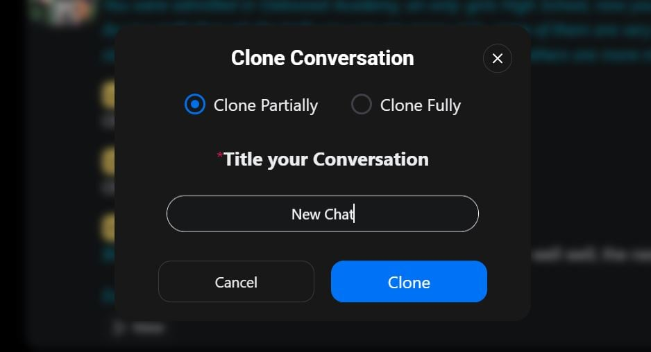

SpicyChat 避坑指南：注册、存档、清记忆，那些新手最容易踩的坑
用了三个月踩出来的真实翻车现场——从注册年龄门到聊天记录找不到、删了消息记忆还在，七个坑逐个拆，附防坑速查清单。
这个平台看着简单得离谱：从SpicyChat下载拿包装好，打开就能逛角色库，点一个就开聊，对话自动存档不用管。但就是这种"什么都替你做好了"的设计，反而藏了几个新手一上来就会踩的坑。我第一次遇到存档找不到的时候以为要重装，后来发现根本不是 bug，是我没搞懂它的规则。
下面这些坑，每一个都是我或身边朋友真实翻过的车，不虚构。
坑一：注册以为能匿名，结果根本不行
症状：兴冲冲打开官网想试一下，结果一上来就被要求登录。点"试试匿名"发现根本没有这个选项，邮箱和谷歌二选一。
原因：平台从一开始就不提供匿名使用。注册必须绑定邮箱或谷歌账号——这不是它一家的问题，但同类平台里确实有允许游客试玩的，没提前做心理准备的人会愣一下。
解法：别用主邮箱。专门注册一个新邮箱扔给这类在线服务，和工作邮箱、常用账号隔离开。谷歌一键登录确实省事，但如果你介意账号被谷歌生态绑定，老老实实走纯邮箱注册。
坑二：以为开了年龄门就能看全角色，结果还可能被地区卡住
症状：注册完在资料设置里找到了成人内容开关，满怀期待地打开，结果发现部分角色还是看不到，或者直接弹出来"你的地区需要额外验证"。
原因：2025 年底起欧美多国的在线安全法规生效，英国、法国、意大利以及美国二十五个州的用户需要额外年龄验证——视频自拍 AI 估算或上传证件。不在这些地区的用户过普通勾选就行，但法规范围覆盖还在变。
解法：先确认自己在不在受影响地区。如果在，按平台提示完成验证就行，别去搜什么"绕过方法"，封号不值。不在的话，勾完年龄门再去资料设置里开开关，刷新一下角色库就对了。
坑三：免费档以为无限聊，结果高峰排队等到天荒地老
症状：凌晨三点开聊丝滑得很，晚上八点再上去，发一条消息卡半分钟，界面还提示"前方排队 128 人"。连续聊了两天后，突然弹出来"今日消息额度已用完"。
原因：免费档确实能用，但有两条硬约束：一是每日消息额度约一百条上下（不同时期负载下浮动），次日重置；二是高峰时段免费请求要给付费用户让路排队。免费档还没有图片生成、语音朗读这些功能。
解法：挑非高峰时段用，排队时间能省一大截。把免费额度当漫长试用期——用一两周确认这个平台的对话质感、你常玩的题材表现、以及失忆问题对你来说是否致命，再决定要不要升档。而且多数评测建议跳过最低档直上中档，最低档性价比不高——这个观点在SpicyChat文档里也有详细分析。
坑四：克隆的对话找不到了，以为平台把存档吃了
症状：前天开的一条线觉得不错，克隆了一个副本想换个方向继续，今天回来翻聊天记录总列表，怎么找都只有原来的那条线，克隆的副本凭空消失。
原因：这是新手问得最多的问题。主菜单的聊天记录总列表，只显示每个角色最近的一条对话——你克隆的、另开的每条线，都藏在对话内三点菜单的"查看保存的对话"里，不在总列表平铺。设计上是怕总列表太乱，但没人告诉我这件事的时候，我真以为存档丢了。
解法：养成习惯——想找某个角色的全部历史线，先进一条，点三点菜单找"查看保存的对话"。总列表是快速回最近那条线用的，不是完整目录。

坑五：删了消息、删了对话，记忆里还留着
症状：一段敏感剧情聊完，把对话里的消息一条条删了，又把整个对话删了，以为干净了。结果下次开新对话，平台还在回忆里提那段事。
原因：消息和对话是一层，记忆管理器又是另一层。你删了消息或对话，由那些消息总结出来的记忆条目独立存在，不会跟着一起删。这不是漏删，是平台的设计——记忆是跨对话的长期上下文，和单次对话解耦了。
解法：清理顺序要三层走：删消息 → 打开记忆管理器手动删关联条目 → 最后删除整段对话。三层都走完，才算真的清干净。敏感剧情结束后别嫌麻烦，按顺序来。
坑六：化身写了真实信息，事后才发现改起来麻烦
症状：第一次玩图省事，化身直接写了自己的真实职业和城市。后来想换个身份玩，发现旧对话里的化身设定已经固化在上下文里了，改化身对已经开始的对话不生效。
原因：化身是开新对话时注入的，已经跑起来的对话不会因为你改了化身就回溯更新。而且化身里的真实信息会被记忆管理器吸收，长期留痕。
解法：化身写戏里的你，不写真实的你。职业写成"侦探"、"程序员"、"学生"，城市写成随便哪个虚构地名。开新对话时化身跟着换，但旧对话的化身改不了——不想让旧对话里的真实设定留着，要么重开，要么按坑五的三层清理顺序彻底清掉。
坑七：以为角色创作者能看到我的对话，其实反过来了
症状：玩着玩着突然想，这个角色的创作者会不会在后台看我聊了什么？然后赶紧停了，不敢再聊敏感内容。
原因：放心，官方明确说了——角色创作者完全看不到任何用户与角色的对话内容，聊天记录仅自己可见。但平台的审核机制技术上可以访问被举报的内容，其他用户也看不到你的对话。
解法：别在对话里放你不想存在任何服务器上的信息——全名、住址、单位、电话、证件号这些，任何在线服务都不该随便输。理解了这三层边界（创作者看不到、平台技术上能访问、其他用户看不到），就知道该小心什么了。
防坑清单
最后速查几条，下次开新号前先过一遍：
- 注册用独立邮箱，不绑定主账号生态
- 年龄门先勾，成人开关在资料设置里手动开
- 免费档挑非高峰用，额度花在有信息量的消息上
- 克隆/另开的对话在"查看保存的对话"里找，不在总列表
- 清理敏感内容走三层：删消息 → 清记忆 → 删对话
- 化身写虚构身份，不填真实信息
- 任何对话都别放可定位真实身份的内容
知道这些坑之后，这个软件其实相当省心——对话自动存、角色库够大、免费档够用，把该注意的地方注意到就行。对了，想仔细研究的朋友可以去代码仓库看看，资料同步放在GitHub、Gitee 和 GitCode 三个地方，哪个顺手用哪个。